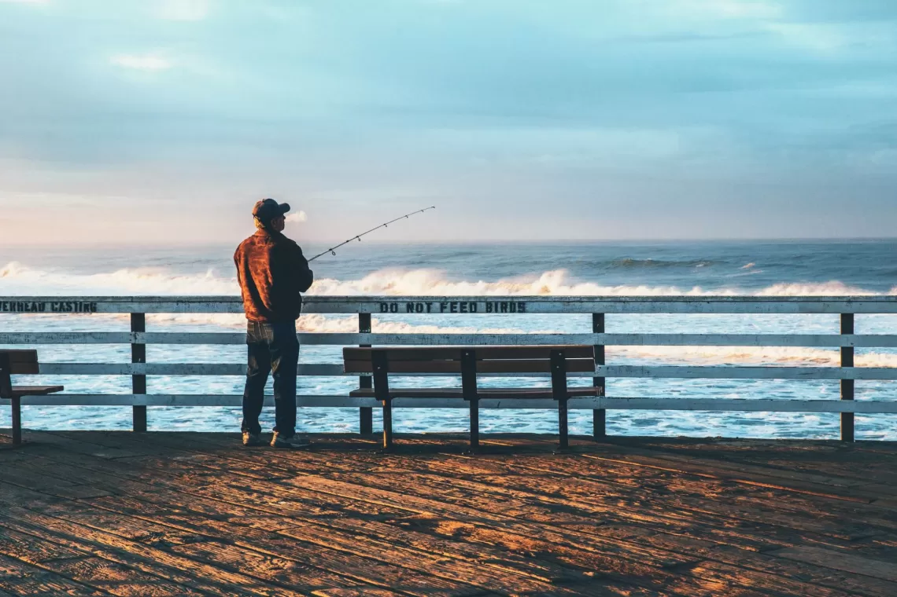
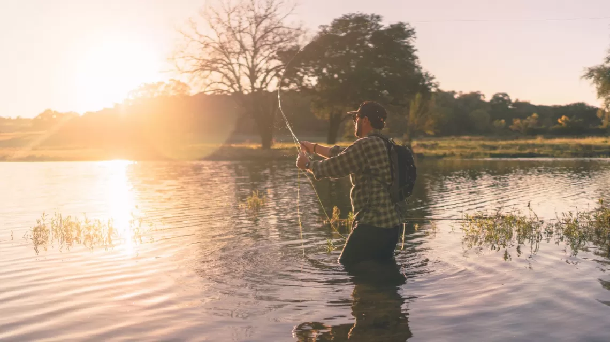
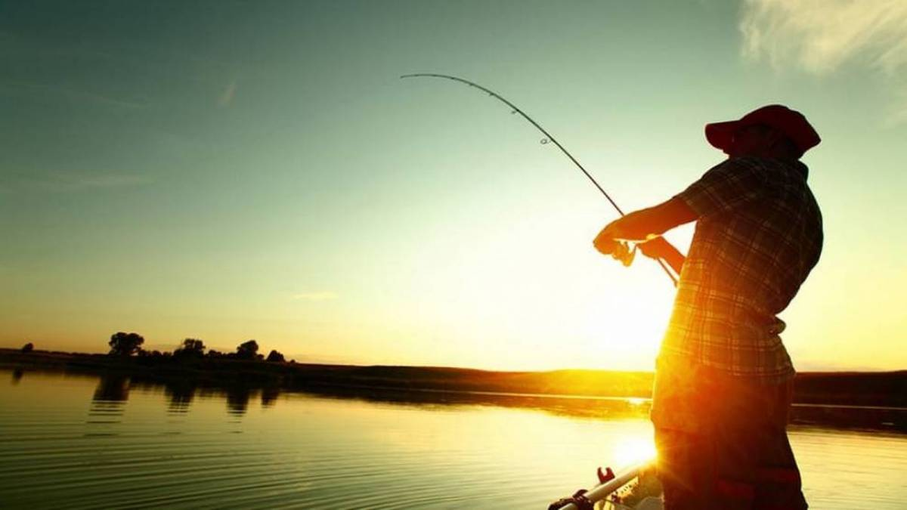

-
1. Позитивна дія природи на самопочуття людини під час риболовлі.
На початку 80-х років професор архітектури шведського і датського університетів,Роберт С. Ульріх зробив багато досліджень в області проектування медичних установ і прилеглих до них територій (подвір’їв з садами, парками та скверами) і їх вплив на післяопераційні болі і на пережитий стрес пацієнті Все почалося з того, що одного разу він звернув увагу на вид, який відкривається з вікон палат.
Одні пацієнти бачили тільки сусідні будівлі медичних корпусів, інші могли насолоджуватися видом парків або скверів у дворі лікарні. 11 причин позитивного впливу риболовлі на здоров'я і самопочуття людини Ульріх почав вивчати відмінності в часі відновлення між двома групами пацієнтів і його результати були досить цікавими: ті пацієнти, які бачили дерева, видужували швидше, ніж ті, які бачили цегляні корпуси зі своїх вікон. Крім того, ті, які могли бачити природу, страждали від меншого післяопераційного болю і потребували меншої кількості знеболюючих препаратів, в порівнянні з першими. Подальше дослідження показало, що саме вид звичайної міської природи допоміг прискорити процес загоєння і зменшення болю. Таким чином, вам не обов'язково займатися риболовлею саме в глибині дикого лісу далеко від цивілізації, щоб скористатися цілющою дією природи - досить ловити рибу в будь-якому природному середовищі. -
2. Риба є джерелом білка, корисного для здоров'я.
Хоча більшість рибалок-любителів, скоріш за все, випускають назад більшість риби, яку вони ловлять, немає нічого поганого в тому, щоб, час від часу, забирати пару рибин додому для приготування корисних страв.
Рибне філе дуже корисне через відсутність жиру і наявність великої кількості білків. До того ж деякі види багаті на дуже важливі для нашого організму омега-3 жирні кислоти, а інші види є одним з доступних джерел вітаміну D. Завдяки таким показникам, риба займає важливе місце в збалансованому харчуванні людини.
Але збираючись взяти улов додому, дотримуйтесь місцевих законів і правил, що стосуються вилову риби, і вживайте екологічно стійкі види, а не ті, які рідко зустрічаються або перебувають на межі зникнення. -
3. Позитивний вплив риболовлі на кров'яний тиск.
Точні причини цього не ясні, але час, проведений на природі, допомагає знизити артеріальний тиск. Високий кров'яний тиск або гіпертонія, як його ще називають, може привести до безлічі серйозних проблем зі здоров'ям і піддавати людину більшому ризику серцевого нападу або інсульту. І хоча є ліки, які лікарі виписують для зниження кров'яного тиску, багато хто з них мають негативні побічні дії на організм людини.
-
4. Риболовля допомагає швидко спалювати калорії.
Більшість з нас можуть скинути кілька кілограмів завдяки великій кількості вправ. А решта - не готові до такого навантаження. Але недостатня рухова активність не тільки призводить до набирання зайвої ваги, але також може стати причиною серцево-судинних проблем, депресії та інших захворювань.